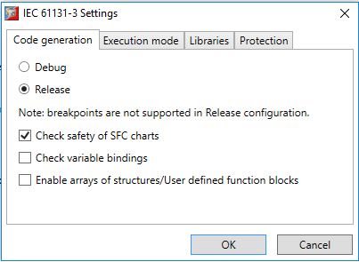
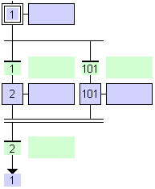
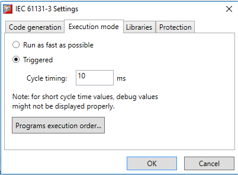
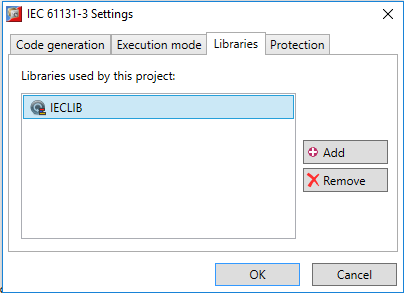
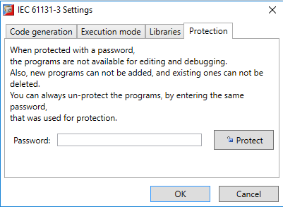
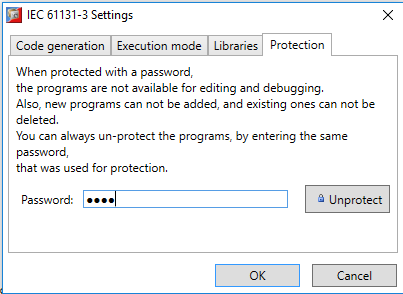

The IEC Settings dialog can be accessed from the context menu of task in the Controller or Project Tree. It allows the user to adjust what type of code is generated and how it is run.

The Code Generation setting controls which type of code is produced:
• Debug Code: Allows the user to use Spy Lists to view variables and to step through the code in order to debug it. The generated code is larger and will run more slowly than the release code.
• Release Code: Contains no debugging information.
There are also additional options for:
• Check Safety of SFC Charts: performs checks of SFC programs and generates. This enables the detection of possible unsafe or blocking situations due to the form of the SFC chart.
Below are two examples of unsafe SFC charts that will generate warnings:

In this case as there is no "AND" convergence, several steps (such as 1 and 2) may be active at the same time.
In this case there is a possible blocking situatio n, a s either transition 1 or 101 is crossed, the transition 2 can never be crossed.
The compiler just provides warning messages when checking SFC charts. You always keep the possibility to run your application even if unsafe situations are reported.
• Check variable bindings: When enabled, variable bindings are checked during compilation and a compiler warning is generated when an unsupported or invalid variable binding is detected.
• Enable arrays of structures/User defined function blocks: When enabled, array variables containing structures or user-defined function blocks can be created.

This determines how the code is executed:
• Run as fast as possible: C ycles are executed with the fastest possible speed of the hardware platform.
• Triggered: Cycles are executed with respect to the specified cycle time. The cycle time is the time between 2 consecutive cycles, in milliseconds. For example, if the user wants to execute code twice each second, the cycle timing should be specified as 500 ms (here the time needed for executing the instructions is ignored, and in real-world scenarios, more precise timing might be needed).
The order of execution of programs within the task cycle can be specified by pressing the “Programs execution order…” button, which launches a dialog within which changes can be made. This could assist in situations where there is more than one program in the task and there is explicit need for this. More information about programs execution order.
If not specified, the order of execution of programs in the cycle is usually the order that the programs have been created.

On this page the libraries that are used be the task can be edited. If there is an IEC 6113-3 library in Motion Perfect project, its functions and user defined function blocks can be used in multiple tasks in the same Motion Perfect project by referencing this library from this settings page.
|
Button |
Description |
|
Add |
Opens a dialog where all available libraries are listed |
|
Remove |
Removes the selected library from the list of referenced libraries |
Libraries are referenced only at source code level. During compilation of a task that references library functions and function blocks, the library code is compiled into the task.

On this page a password to protect the code from editing and debugging can be set up. When a password is specified, all editors for this task/library are automatically closed and the programs cannot be open for viewing or editing until the password is re-entered to unprotect the task/library.
Protection happens immediately as you click on the “Protect” button. Even if you press the “Cancel” button later, the programs will be protected. You can unprotect the programs by entering the same password and pressing “Unprotect”.
Please note that without specifying the same password, programs cannot be restored!
